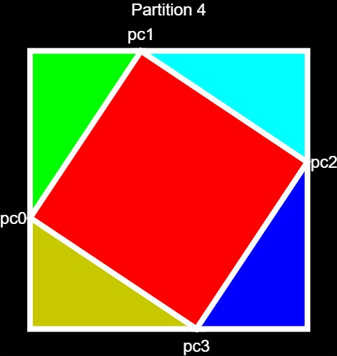
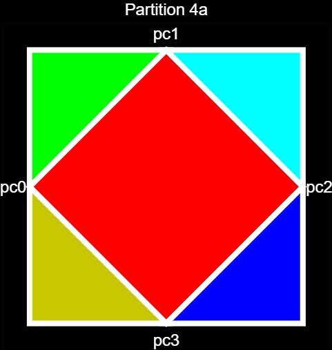
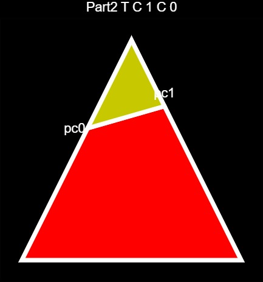
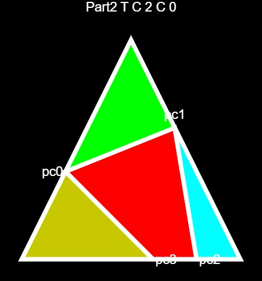
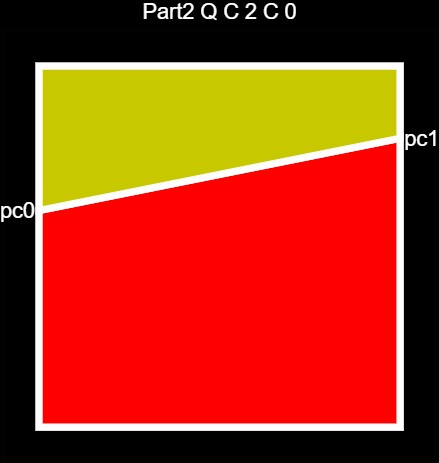
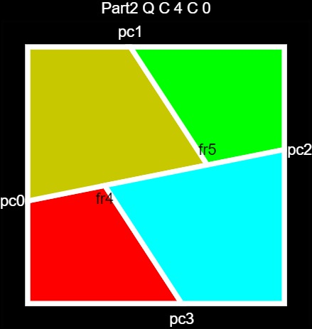
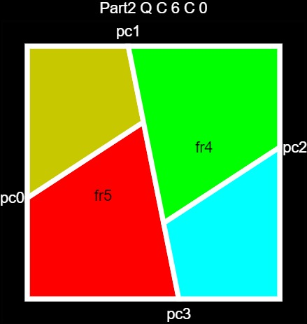
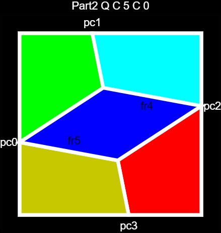
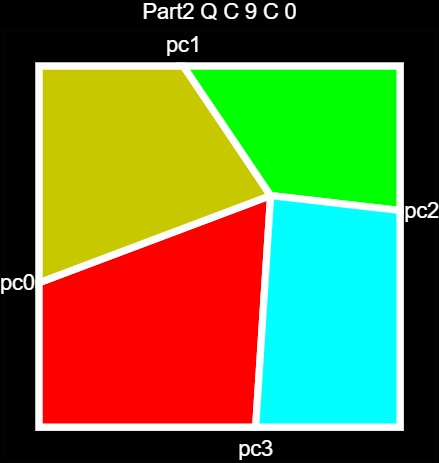

{{boilerplate_kop}}
<div>
<p><a style="color:white" href="kop_general.html">General Considerations</a></p>
<p class="title">Partition Trees</p>
<p> A geometric partition tree is a  data structure which 
consists of a hierarchical partition of 2d polygons into smaller polygons. 
In this implementation, attention is restricted to triangles and convex quadrangles. 
Also, I restrict attention to those hierarchical partitions whose nodes consist of 
 eight basic partitions. Each basic partition includes parameters 
 which determine what fraction of the distance along its edge each labeled point appears. 
 For example, here is the fourth basic partition, which partitions a quadrangle into four triangles 
 surrounding a smaller quadrangle. The parameters pc0, pc1, pc2 and pc3 are set to 0.4 in
 this case.
 <p></p>
 <p> Here is the same partition with parameters set to 0.5:</p>
  <p></p>
  Next is an image in which each quadrangle is partitioned via partition 4 and each triangle
  is partitioned via partition 1, recursing down 4 levels.
  <p></p>
  <p>The eight basic paritions are </p>
<p>
</p>
</p>
<p></p>
 

</div>
</div>
</body>
</html>


